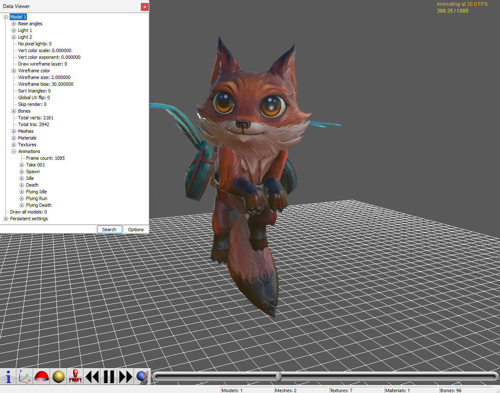

What it exports
- Static and animated
.gltfscenes - Meshes, skins, animation, cameras, and lights
- Textures plus merged alpha / metallic-roughness maps
mviewer.runtime.jsonand generatedviewer.html
mview viewer and exporter
.mview scenes to glTF.
mviewer is a Rust-native .mview viewer, exporter, and converter for static
and animated Marmoset Viewer scenes. It is designed for users searching for an
mview viewer, mview editor, mview to gltf, mview to fbx, or mview to obj workflow.

.gltf scenesmviewer.runtime.json and generated viewer.htmlmviewer-vX.Y.Z-windows-x64.zipmviewer-vX.Y.Z-linux-x64.tar.gzmviewer-vX.Y.Z-macos-arm64.tar.gzmviewer-vX.Y.Z-macos-x64.tar.gzmviewer --help to verify the installmviewer input.mview output_dirThe exporter writes a glTF scene, binary buffer, textures, runtime sidecar, and browser viewer.
glTF preserves materials, skins, animation, cameras, and lights better than the old workflow. From there you can convert to FBX, OBJ, Blender, or other formats if needed.